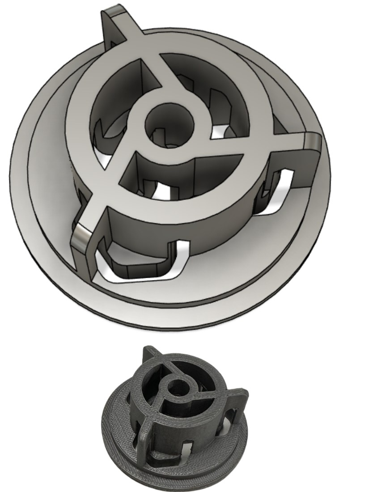
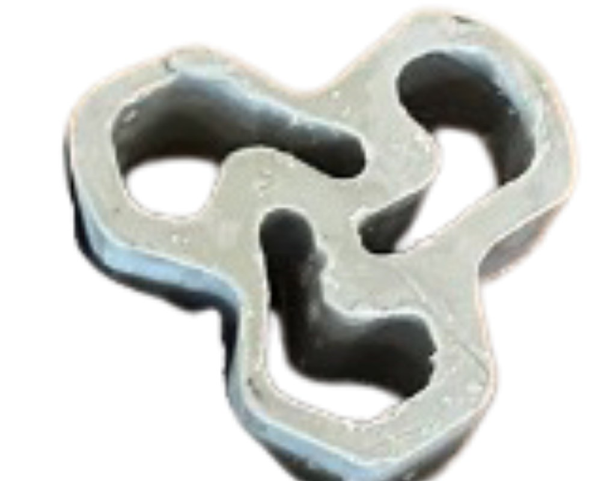
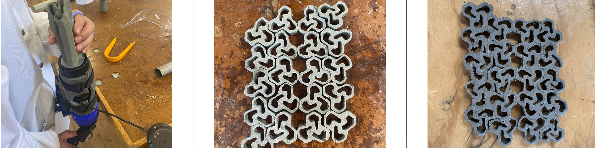

The idea
Design an extrusion die whose profile, repeated, builds something bigger. Ours was a decorative screen wall made of one interlocking shape.
We set three things to design around. The die: consistent wall thickness so the clay flows evenly without collapsing, and tapered edges for smooth extrusion. Efficiency: a shape that's easy to repeat and won't deform as it's handled, with the ribs placed so the die is easy to clean. Negative space: holes within and between modules, so the screen reads as a pattern.
From sketch to die
We sketched tessellating hook and hexagon shapes, then refined the chosen three-armed form in Fusion 360 over three concept models:
- The single shape scaled up to fit better within the circular die, after feedback from our tutor.
- Even gaps between the cut-outs.
- Curves added throughout for more negative space, leaving a small gap between each extrusion.
Inside the die, the ribs (supporting walls) follow the shape's strong curvature. Arranging them in a circle keeps the pressure even during extrusion and stops the profile deforming.

Making it
We extruded the shape several times to get a consistent piece. Extruding fast stopped the clay bending over. Once it cooled and hardened, we cut it into sections and arranged them into the pattern, then used a soldering iron to heat the sides of each section so they would stick together. That was tricky, since each piece could have up to 10 sides to heat.
The clay extruded best after 15 seconds in the microwave: just soft enough to flow while holding its shape. Moving the warm clay into the tube and extruding straight away avoided early cooling and gave crisp, clean sections.


Portfolio
Pages from the group portfolio. Click a page to open it.


CAD files
I made the die and pusher drawings.